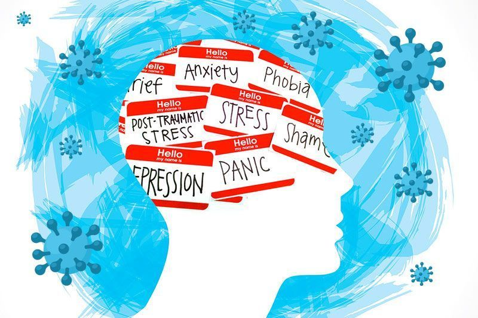
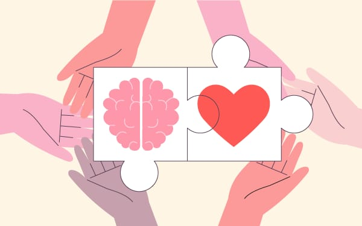

Cuida tu mente tanto como tu cuerpo 🍃🧠
Bienvenido a tu espacio de bienestar mental y emocional. En un mundo acelerado, donde el estrés y las preocupaciones pueden afectar nuestra tranquilidad, cuidar de nuestra salud mental es más importante que nunca. Aquí encontrarás herramientas, consejos y recursos para fortalecer tu bienestar emocional, manejar el estrés y construir una vida más equilibrada y plena. Porque la salud mental no es un lujo, es una necesidad. ¡Descubre cómo mejorar tu bienestar hoy!
La salud mental es el estado de bienestar en el que una persona puede afrontar el estrés diario, trabajar productivamente y contribuir a su comunidad. No significa simplemente la ausencia de trastornos mentales, sino también el equilibrio emocional, psicológico y social. Abarca cómo pensamos, sentimos y actuamos, y es fundamental en todas las etapas de la vida. Según la OMS, la salud mental incluye aspectos como la capacidad de manejar el estrés, relacionarse con los demás y tomar decisiones. Además, entender la salud mental y los factores que la afectan nos permite tomar medidas para fortalecerla y prevenir enfermedades mentales.
Podemos observar que la salud mental es un aspecto muy importante que en ocasiones descuidamos por ser más complicado de observar que la salud física. No obstante, es imprescindible prestar atención a las señales de alarma que pueden avisarnos de un posible bache emocional. De lo contrario, podemos desarrollar una enfermedad mental o un trastorno mental.
